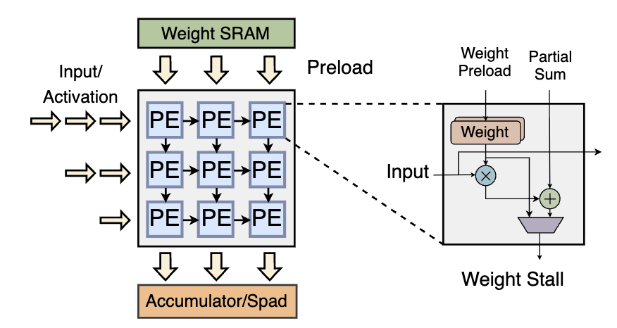

My current work at WukLab, advised by Professor Yiying Zhang, asks how to make local AI inference practical on NPUs. An accelerator can execute a model efficiently once the program is ready, but getting it ready can require substantial CPU compilation and memory allocation. Those costs matter to an interactive application.
I have been working on two connected projects: reducing repeated work inside the NPU compiler, and building a runtime that prepares larger programs while inference is already running. Together, they address both how much compilation costs and when the application has to wait for it.
In this post: Compiler optimization | Compile ahead | Grow memory with context | Next questions
Inside an NPU
NPUs organize many processing elements (PEs) to perform repeated multiply-and-accumulate operations. In the weight-stationary arrangement below, weights are preloaded from SRAM into the array. Activations move through the processing elements, while partial sums accumulate toward the output. Keeping data close to the arithmetic reduces the need to repeatedly fetch it from farther away.

A weight-stationary processing-element array. This is a conceptual architecture illustration, not a diagram of a specific Intel NPU implementation.
The compiler maps a model's operations and tensor shapes onto this execution structure. The runtime then manages when compiled programs run and where their inputs, outputs, and persistent state live. That division explains why compiler preparation and memory management matter alongside the arithmetic itself.
Why the runtime matters
Autoregressive inference changes as it runs: every generated token extends the context and adds key and value state to the KV cache. In the static-shape NPU path studied here, compiled programs require concrete tensor dimensions. The runtime must decide which shapes to compile, how much memory to reserve, and when to move to a larger program.
A straightforward design prepares a large context window before the first token. This makes execution simple, but a short request pays for capacity it may never use. Preparing several sizes in advance improves shape selection while retaining the cost of compiling them all before serving the request. These are systems decisions around the model, and they can dominate the experience even when the NPU executes individual operators quickly.
Project 1: remove repeated compiler work
Problem. The compiler repeatedly needs dependency and consumer lists in a deterministic order. Sorting those lists on every lookup repeats CPU work when the underlying dependency graph has not changed. A hot helper can accumulate significant work even when each individual sort is small.
Idea. Cache the sorted dependency and consumer vectors. On an unchanged graph, a later lookup can reuse the ordered result. When a mutation changes the relevant relationships, invalidate the affected cache so the next lookup rebuilds it.
The difficult part is maintaining the contract around graph updates. A stale list can silently change scheduling behavior. The optimization therefore has to account for mutation paths and preserve the ordering expected by callers; simply storing the first answer is not sufficient.
This project reduces the amount of compilation work. The runtime project addresses a different question: how much of the remaining work must sit on the application's critical path?
Project 2: compile ahead, not up front
Problem. Waiting until a request reaches the end of its compiled context window causes a pause while the next program is prepared. Compiling every future window at startup avoids that boundary pause, but delays the first useful inference and may prepare programs that the request never reaches.
Idea. Start with a small program and compile a larger one on the CPU while the NPU continues inference. Keep preparation ahead of context growth. Before switching, ensure that the next program is ready and that the live KV state can be carried forward correctly.
In the one-ahead design, the current program executes while the next size is being prepared. It bounds speculative work compared with compiling every size immediately. It also gives the compiler more time than a design that starts compilation only at the boundary.

CPU compilation overlaps NPU inference. Original concept drawing by Vikranth Srivatsa.
The overlap is useful only if preparation finishes before it is needed. A fast decoder, a large compilation step, or contention for shared resources can consume that margin. Foreground waiting and total CPU work must therefore be measured separately: moving work into the background does not make it free.
Let KV memory grow with the context
Progressive compilation alone does not make memory use proportional to the request. A runtime can select a small graph while still reserving the largest KV buffer. To address that, the runtime starts with capacity suited to the current context and grows it when needed.
At a growth boundary, it allocates the next capacity, copies the live KV state, binds the new program, and continues decoding. The sequence length, positions, and cached state must remain consistent across the switch. The copy itself also has a cost, and the old and new allocations may temporarily coexist.

Use the smallest suitable capacity and carry the live state forward. Original concept drawing by Vikranth Srivatsa.
What I measure
I separate startup compilation, background compilation, waiting at a boundary, state transfer, and steady-state decoding. I also track memory as context grows and check output correctness across program switches. This makes it possible to tell whether an improvement removes work, overlaps it, or merely shifts it elsewhere.
The two projects complement each other. Caching compiler results can shorten preparation, while progressive compilation gives the CPU a window in which to perform that preparation. Copy-and-grow addresses the allocation side. Their percentages measure different quantities and cannot be added into one speedup.
Broader questions for NPU systems
I am also measuring CPU, GPU, and NPU placement preferences at the operator and inference-stage levels. The best device depends on the operation, shape, and cost of crossing device boundaries. An operator-level win is useful evidence, but it does not by itself establish an end-to-end scheduling improvement.
The next questions are how to adapt compilation lead time to the request, reduce state-transfer costs, and account for shared-resource contention. These are ongoing directions. The broader goal is to make compilation, memory, and device placement respond to the workload as it unfolds.
Research overview | Compiler contribution
Research with Vikranth Srivatsa, advised by Professor Yiying Zhang. Updated September 23, 2026.